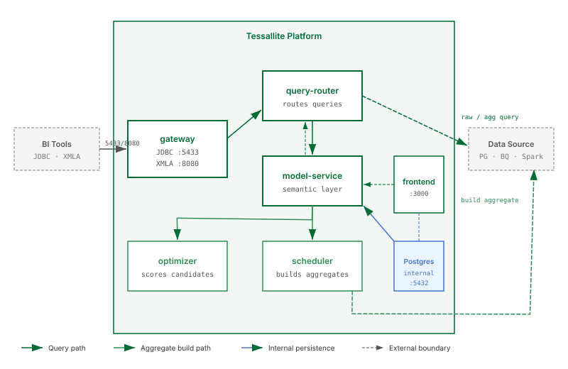

Architecture Overview

What this covers
The seven services that make up the Tessallite platform, the internal database, the optional monitoring stack, how data flows through the system, multi-tenant isolation, and where aggregates and pocket tables are physically stored.
Clients
Five types of client connect to the platform:
| Client | Protocol | Connects to |
|---|---|---|
| BI tools (DBeaver, Tableau, Superset, psycopg2) | JDBC (port 5433) | gateway |
| Excel via XMLA (PivotTables, Power BI) | XMLA/HTTP (port 8080) | gateway |
| Excel Add-in (Office.js task pane) | HTTPS (port 3443) | frontend (nginx proxy) |
| Conversational Client (standalone chat app) | HTTP | model-service (auth), agent-service (chat) |
| Tessallite Frontend (browser SPA) | HTTP/HTTPS (port 3000/3443) | frontend (nginx proxy to all services) |
The Excel Add-in is a React-based Office.js task pane (excel-plugin/) embedded inside Excel. It provides a Report Builder, Ask Tessallite chat panel, CUBE formula wizard, drill-through, persona switching, and query trace.
The Conversational Client is a standalone chat-first web application (conversational-client/) with a Flask SSE proxy backend and a React/MUI frontend. It connects directly to model-service for authentication and agent-service for conversations, or through the frontend proxy.
Service map
Clients
|-- BI tools (DBeaver, Tableau, Superset) ---> gateway :5433 JDBC
|-- Excel PivotTables / Power BI -----------> gateway :8080 XMLA
|-- Excel Add-in --------------------------> frontend :3443 HTTPS
|-- Conversational Client ------------------> model-service / agent-service
+-- Tessallite Frontend (browser) ----------> frontend :3000 HTTP
|
nginx reverse proxy to all backend services
|
+-------------+-------------+-------------+-------------+
| | | | |
model-service query-router optimizer scheduler agent-service
:8001 :8000 :8000 :8000 :8000
[ PostgreSQL :5432 ]
Optional (standalone Docker Compose in monitoring/):
[ prometheus :9090 ] Metrics collection (scrapes all 7 services)
[ grafana :3001 ] Dashboard UI (21 panels, 3 sections)
Services
gateway
The public entry point for query traffic from BI tools. Exposes two protocol endpoints:
- JDBC (port 5433) — a PostgreSQL wire protocol listener for DBeaver, Tableau, Superset, psycopg2, and other JDBC-compatible tools.
- XMLA (port 8080) — an HTTP/SOAP endpoint for Excel and Power BI. Handles DISCOVER (catalogue browsing) and EXECUTE (DAX/MDX queries).
Gateway authenticates callers via Basic auth or Bearer JWT, translates incoming queries, and forwards them to query-router. Personas are resolved from the JDBC dbname or XMLA Catalog property.
model-service
The semantic layer and platform API (port 8001). This is the central API server that external clients (conversational client, Excel add-in, embed consumers, MCP server) connect to for authentication, model metadata, and management operations. Stores and serves all model metadata: projects, connections, tables, joins, dimensions, measures, hierarchies, aggregates, pocket tables, personas, row-security rules, data-quality rules, alerts, and audit logs. Provides authentication, RBAC, user management, import/export, and the embed token API. In local Docker deployment, reached through the frontend nginx proxy. In GCP Cloud Run, runs as a standalone public service.
query-router
Receives queries from gateway, the frontend, the Excel add-in, and the agent (port 8000). Parses SQL or DAX, binds to the semantic model, applies persona gates and row-security filters, checks for matching aggregates or pocket tables, rewrites the query if a faster route exists, executes against the data source, and returns results with a route trace.
optimizer
Reads the query miss log and scores candidate aggregates by ROI (port 8000). When a candidate exceeds the score threshold, it surfaces as a build recommendation. AI-assisted mode uses an LLM to analyze miss patterns.
scheduler
Builds and refreshes aggregate and pocket tables in the user's target schema (port 8000). Two refresh modes: full (DROP + CTAS) and incremental (watermark-based DELETE + INSERT). Runs on configurable cron schedules with hourly schema drift detection and daily retirement sweeps.
agent-service
The conversational AI backend (port 8000). Translates natural-language questions into semantic queries via the query-router pipeline and returns answers with citations and chart visualisations. Supports Claude, GPT, and Gemini with session memory, judge rubrics, cross-model recipes, and glossary alias maps.
frontend
Web management interface (ports 3000/3443). Nginx serves a React 18 + MUI SPA with the Workspace Explorer, Model Builder canvas, Query panel, Agent chat, and Admin panels. Nginx proxies all API calls to backend services so the browser never makes cross-origin requests.
Internal PostgreSQL database
Tessallite runs its own PostgreSQL 15 instance (port 5432, internal only) with a multi-schema architecture:
| Schema | Purpose |
|---|---|
tessallite_system | Platform-level metadata: system tenants, revoked embed tokens |
<tenant>_meta | Per-tenant model metadata: projects, connections, models, dimensions, measures, aggregates, query logs, alerts, audit trail |
<tenant>_aggregates | Per-tenant materialised aggregate and pocket tables (when target is internal DB) |
The internal PostgreSQL database is not exposed outside the container network. No BI tool or user application should connect to it directly.
Multi-tenant isolation
Each tenant gets its own PostgreSQL schemas. Connection credentials are Fernet-encrypted. Tenant resolution happens via JWT claims or JDBC dbname parameter. Tenants cannot access each other's schemas.
Data flow
- A BI tool sends a query to gateway via JDBC or XMLA.
- Gateway authenticates the caller and translates the query.
- Gateway forwards the translated query to query-router.
- Query-router parses, binds to the semantic model, and applies persona/security gates.
- Query-router checks for aggregate/pocket matches:
- Match found: rewrites query to target the pre-built table.
- No match: routes to raw source tables and records a miss.
- Query-router executes and returns results through gateway to the BI tool.
In parallel: optimizer reads the miss log to score candidates; scheduler refreshes aggregates on cron; agent-service handles natural-language queries.
Where aggregates and pocket tables live
Aggregate and pocket tables are written to the user's own data source in the configured target schema. Tessallite stores only the definition and build status. Supported targets: PostgreSQL, BigQuery, Spark/Hive, SQL Server.
Stateless service design
All seven services keep no local state. All persistent state lives in PostgreSQL. Any service can be stopped, restarted, or scaled without data loss.
Optional monitoring stack
A standalone Prometheus + Grafana stack in monitoring/ at the workspace root. Runs as its own Docker Compose project, connected via the shared tessallite_net network. Scrapes all 7 services with 21-panel Grafana dashboard covering service health, query routing, and per-model usage. Entirely optional. See Monitoring Stack.
Port summary
| Service | Port | Protocol | Used by |
|---|---|---|---|
| gateway (JDBC) | 5433 | PostgreSQL wire | BI tools via JDBC |
| gateway (XMLA) | 8080 | HTTP/XMLA | Excel, Power BI via XMLA |
| frontend | 3000 / 3443 | HTTP / HTTPS | All users (web browser) |
| model-service | 8001 | HTTP | Frontend proxy, gateway, agent-service, conversational client, Excel add-in, embed consumers |
| query-router | 8000 | HTTP | Internal |
| optimizer | 8000 | HTTP | Internal |
| scheduler | 8000 | HTTP | Internal |
| agent-service | 8000 | HTTP | Frontend proxy, Excel add-in, conversational client, embed consumers |
| PostgreSQL | 5432 | PostgreSQL | Services only |
| Prometheus | 9090 | HTTP | Monitoring (optional) |
| Grafana | 3001 | HTTP | Monitoring (optional) |
Technology stack
| Concern | Technology |
|---|---|
| Backend | Python 3.12, FastAPI, SQLAlchemy 2.0 (async), asyncpg, Pydantic 2 |
| Query parsing | sqlglot (SQL), tree-sitter (DAX/MDX) |
| Frontend | TypeScript, React 18, Vite, MUI 5, Zustand, ReactFlow, TanStack Query |
| Database | PostgreSQL 15 |
| Gateway | Custom JDBC (PG wire), XMLA/SOAP (HTTP) |
| LLM providers | Claude, GPT, Gemini |
| Scheduling | APScheduler with PostgreSQL advisory locks |
| Packaging | UV, npm, Docker |
| Monitoring | Prometheus, Grafana, nginx-prometheus-exporter |